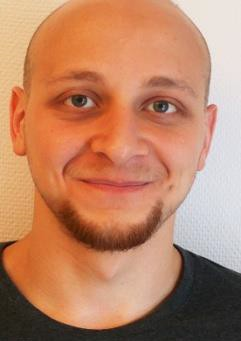

Curriculum vitae
Kort Om Mig
En riktig IT-kille som läste datorvätverk i gymnasiet och i ett institut för två år.
Har jobbat i mer än fem år i industribranschen som maskinoperatör, och nu pluggar jag till systemutvecklare i yrkeshögskolan i Varberg.
Av tidigare arbetskamrater har jag fått höra att jag motiverar och entusiasmerar mina kollegor, är också trevlig och ställer upp för dem när de behöver hjälp.
Jag gillar utveckling och att lära nytt. Jag arbetar jättebra i ett team och även i stressiga situationer.
PROJEKT PORTFÖLJEN
ARBETSLIVSERFARENHET
UTBILDNING
FEM ORD SOM BESKRIVER NAEL
- Uppriktig
- Utåtriktad
- Innovative
- Självgående
- Kvalitetsmedveten